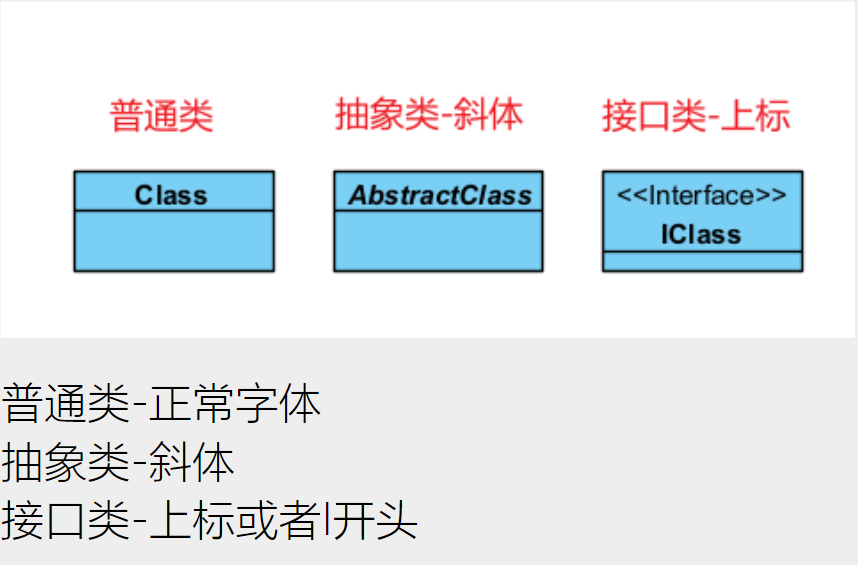
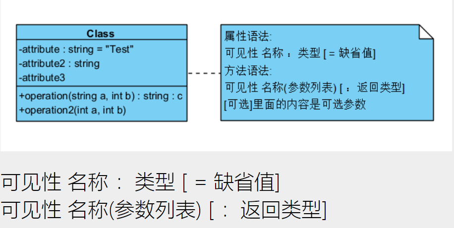
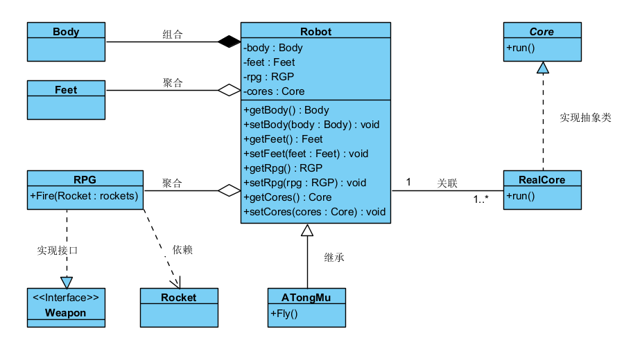

类图解析
1.类的样式

2.类的属性和方法样式

3.类之间的关系

1.创建型:
1.1 继承/泛化(子类继承父类的一切属性和方法)
子类完全继承父类的一切,(其实就是把父类的代码全部复制了一份,所以可以直接调用)
1.2 实现关系(子类实现了父类的方法)
一种弱的继承关系,实现了接口定义的所有方法(没有变量)
2.调用型:
2.1 关联关系(属性调用)
仅仅表示类的成员属性保存了对另一个类的一个或多个实例的引用,组合和聚合关系是对于关联关系的进一步细分
在属性里面保存了另外对象的引用(内存结构上的关联,通过成员属性来关联)
2.1.1 聚合关系:弱关联(属性调用-引用外部实例)
整体和部分的关系has a关系,整体和部分分别实例化,然后整体引用了部分的对象,可以有不同的生命周期,实例化了不同的对象,整体没有这个部分
弱关联,部分对象自己实例化,引用来组合
2.1.2 组合关系:强关联(属性调用-引用内部实例)
强关联,在当前类进行实例化,内存存在一起的.
整体与部分的关系,Contain关系,通常是在整体这个类实例化其余部分类,拥有相同的生命周期(就是手动实例化部分变量(复制代码过来,然后命名再使用))
2.2 依赖关系(函数调用)
成员函数的依赖,一个对象通过函数持有(输入或输出参数)了另外一个对象的引用,所以另外一个对象变化会影响到A对象
4.助记小故事-机器人设计师小熊
机器人设计师小熊
小熊在设计一个机器人,首先他设计了一个机器人Robot需要的东西,Body身体是必须的,所以是组合关系,Feet脚和RPG武器是非必须的,所以是聚合关系,RPG又需要火箭弹才能用,所以他依赖于火箭弹对象Rocket,RealCore真正的核心是实现Core抽象核心,Robot又关联了1-*个核心,机器人ATongMu阿铜木继承Robot机器人的全部能力,自己又增加了Fly功能,最后就得到了一个完整的机器人拉,可以飞,有火箭弹武器,可以加载多个核心供能.